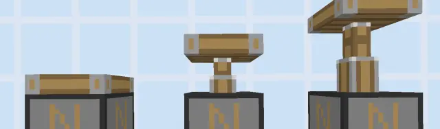
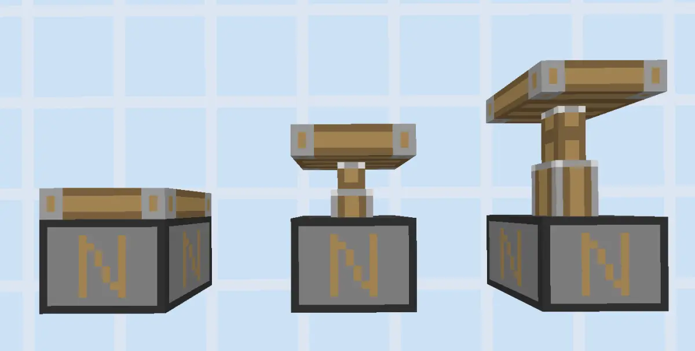
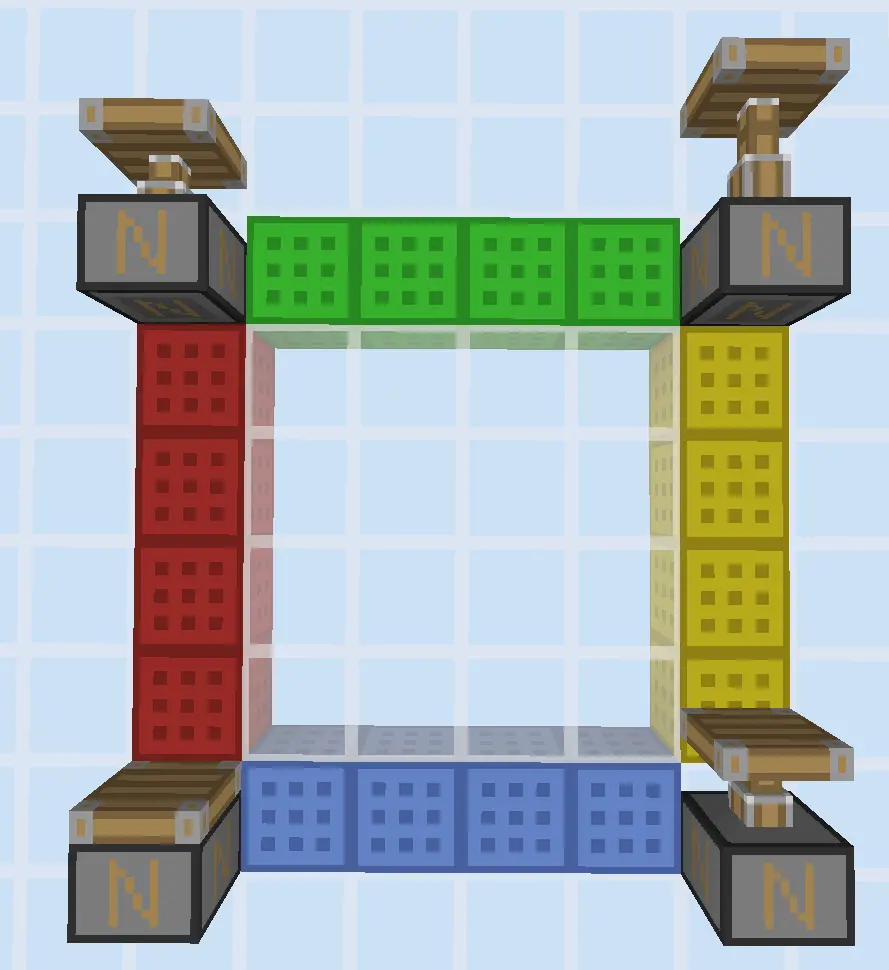
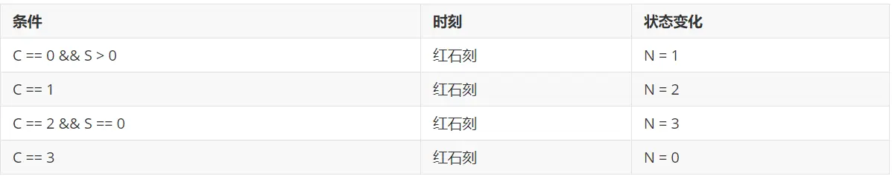
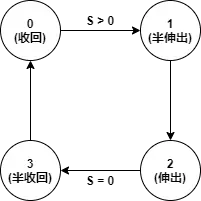
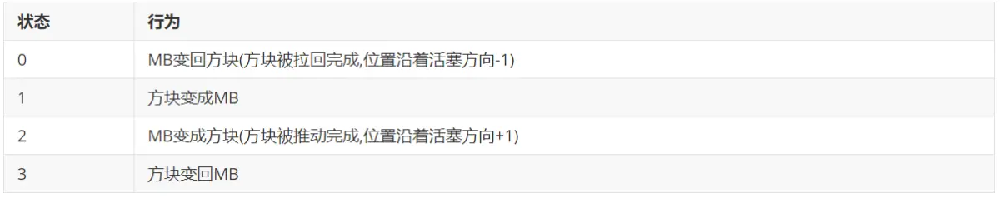
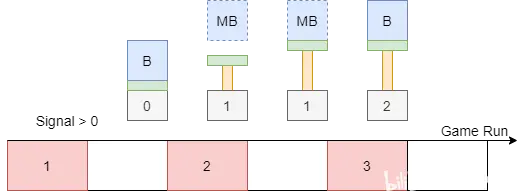
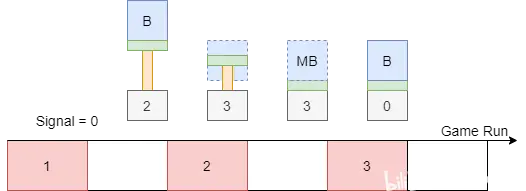
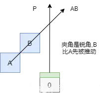

在这篇专栏中你能看到对以下问题的解答：
在阅读本篇之前请先浏览第二篇
以及务必知晓如下前提
在玩家眼中活塞有未伸出，伸出一半以及完全伸出这三个阶段，如下同所示：

玩家对活塞的直观感受是这样的：未收到红石信号的活塞位于第一个状态，收到红石信号的活塞会从第一个状态开始经过第二个状态过渡后最终停留在第三个状态，并将活塞臂方向的方块往外推出一格。在红石信号小时候，活塞会进行相反的过程，如果是粘性活塞还会把方块拉回到原的位置。
在游戏内部，活塞有且仅有四个状态:分别为收回，半伸出，伸出，半收回。下文用0、1、2、3四个数字来代表这四个状态。如下图所示：

左下角是收回状态(状态0)，左上是半伸出状态（状态1），右上是伸出状态（状态2），右下是半收回状态（状态3）.这四个状态的互相转换构成了BE版活塞的所有性质。
在谈论这个问题之前首先要明确的是，活塞内部参与更新的部分有消费者(Piston consumer)和方块实体(Piston block actor)两个部分。前者负责活塞内部红石信号的更新，后者负责活塞的运动状态（也就是和世界的交互）,只发生在模拟距离之内。
并且在同1gt内，方块实体总是先于消费者而更新的。下面的伪代码描述了这个更新顺序：
bool isRedstoneTick = false;
void BlockActorTick(){} //更新方块实体
void RedstoneTick(){} //消费者更新在这里面
void LevelTick(){ //游戏更新
isRedstoneTick = !isRedstoneTick;
BlockActorTick();
if(isRedstoneTick){
RedstoneTick();
}
}
int main() {
while(true){ //游戏主循环
LevelTick();
}
}活塞消费者属于消费者的一种，它的更新在第二篇中做过详细的解释，这里不再赘述。下面重点来看活塞方块实体的更新。
在省去无关部分(如和实体交互)并做了适当简化后，该更新过程分依次为如下两个部分:
下面分成两小节来分别讲这两个步骤：
状态更新主要依据下面四条规则(用C代表当前装状态,N代表新状态，S表示红石信号的值,&&表示且)：

注意：这里为了方便理解做了一定的简化，mojang这部分判定的代码太乱了，没啥规章。
下面这幅图很好地描述了这一状态循环。

不过请注意，这里仅仅是计算出新状态并设置，不会产生外部行为，因此这些改变暂时不会在游戏中表示出来。
当且仅当当前游戏刻为红石刻且新旧状态不一样时该行为才发生。
这一步的目的是根据当前不同的状态来对活塞附着的方块进行处理,行为如下表所示:

MB和方块具体如何转换请看第五节。
讲了这么多理论分析，下面就活塞的推出和缩回做一些时序分析。
下图是活塞的推出过程，现在来做一个简单的解释：

这就是一个完整的活塞推出流程，请注意，这个图并不会向左或者向右边偏移1gt，因为实际的状态变化一定发生在红石刻。到这里，你会怎么定义活塞的推出时间呢？
怎么说都有理。因此这里不会定义活塞的推出时间。至于cd也是如此，只要你的定义能够描述这个事实，怎么定义都可以。
收回的过程和推出完全相反，其示意图如下所示，这里不再赘述。

答案是不存在。因为处于状态1或者状态3的活塞在下一个红石刻会无视红石信号变成状态2和0，如果不这样的设计的话，BE的活塞会出现瞬推和瞬收的动画(但是状态变化还是连续的)，这样也不好管理MB和方块之间的互相转换。
方块在被推后还没有复原的状态也是一种方块，在Java版中该方块的id为36，因此被称之为36号方块。而在BE版中这个方块同样存在，但是方块id是250,名称是Moving Block,以下和以上简称为MB。
Mojang在早期版本添加方块的时候特地预留了id为36的位置，但是这个位置最终没有分配给MB，而是被教育版中的0号元素方块所占据。
方块和MB之间的转化没什么要点，这里简单提一下。
在活塞由状态0转向状态1以及由状态2转向状态3的时候会触发该行为。
这里面还有对流动水，大箱子等特殊方块做了一些特殊处理，这里不赘述
在活塞由状态1转向状态2以及由状态3转向状态0的时候会触发该行为。
如果不实现规定好活塞附着的方块的移动顺序问题，就会出现各种拉扯和数据丢失。活塞内部维护了一个需要移动的方块列表，并按照特定的规则对方块进行排序。排序需要依据一个严格的二元比较规则，该规则如下所示:
对于附着的方块A,和B,先计算A到B的位置向量AB,然含给定活塞的推动方向P,如果AB和P的点乘(数量积)大于0,也就是这俩相向量的夹角是锐角，那么B会比A先动，否则A先动，下面有一个简单的示意图:

BE的活塞在各方面来看都是简单清晰而明了的。一句话就是在每个红石刻根据红石信号更新自身状态并处理与世界的交互，其自身的有限状态机也是出奇地简单和易于理解。所谓的推出时间、收回时间在不同的定义下有不同的结果。在非红石刻中BE的活塞基本不会做任何更新和改变，除了动画，这也就是为什么玩家感受到的BE的活塞伸出和缩回很慢的原因。
除此之外，在随机的区块更新顺序以及随机的方块实体更新顺序的加持下，BE的活塞之间也没有明显的优先级，随机之下，众生平等。
略